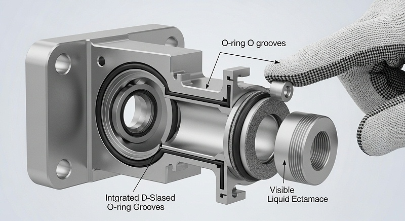
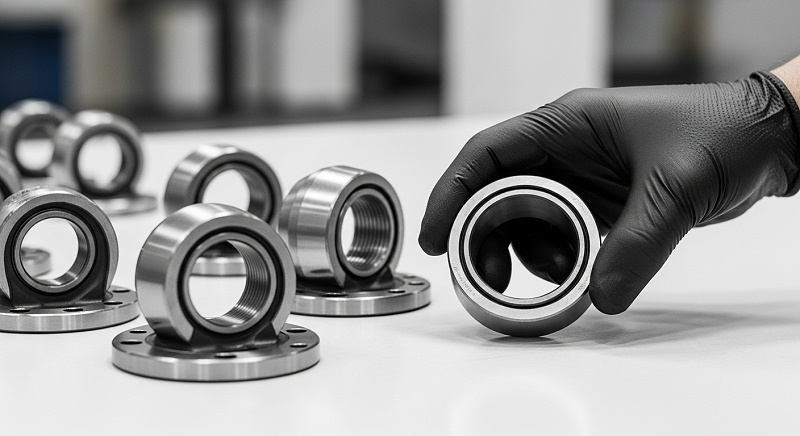
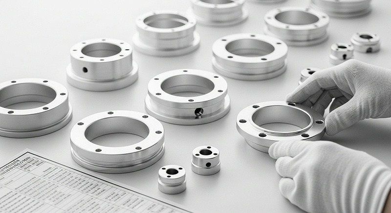
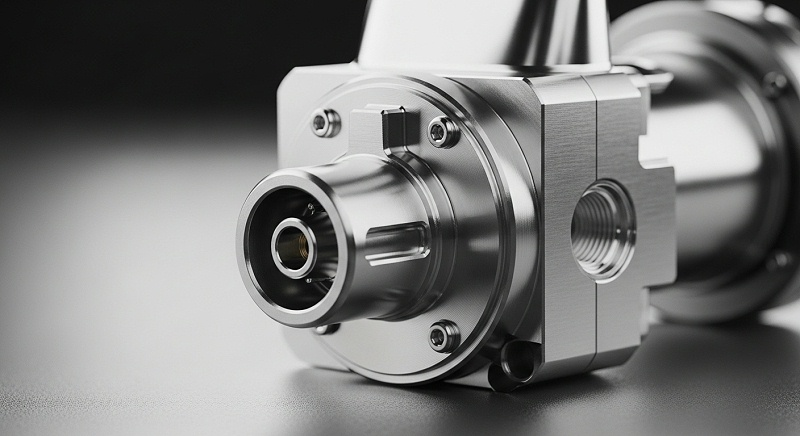
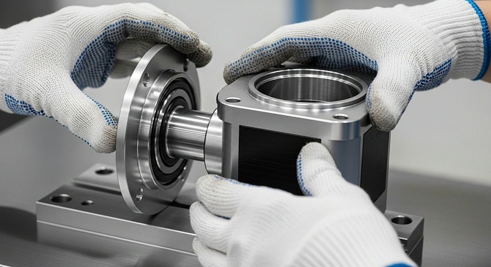

铝合金机器视觉CNC如何保证精度一致性与批量检测
评估铝合金机器视觉CNC加工方案时，真正让你犹豫的往往不是图纸能不能画出来，而是薄壁散热壳体在机加工后那0.05mm的跳动、阳极氧化后装配面上的尺寸漂移，以及首件合格但批量段差超差的隐性风险。这些问题的根源不单是设备精度，而是从基准选择、装夹策略到应力释放和膜厚补偿的系统控制能力。
本文以伟创业cnc加工的实际项目复盘为主线，帮你建立一套可验收、可追溯、可复盘的铝合金机器视觉零件加工判断框架，降低在打样、装配或批量交付阶段暴露返工和延期风险的可能。
外观缝隙与装配段差的真正来源不在最后一道工序
很多机器视觉设备的结构工程师拿到铝合金外壳或散热壳体首件时，重点眼看的往往是拼缝是否均匀、段差是否平齐、曲面转角是否利落。一旦发现视觉敏感区存在偏差，直接反应通常是“CNC加工精度不够”或“后处理没做好”。
但从项目复盘的角度看，缝隙和段差极少是单一工序造成的——它是基准传递、公差链叠加、装夹变形、残余应力释放和表面膜厚共同作用的结果。
以伟创业cnc加工接触过的机器视觉散热壳体为例，这类零件常见的结构特征是薄壁多、腔体深、安装面与外观面呈90度转折，部分壁厚甚至只有1.2mm到1.5mm。
如果编程时只按3D模型理论轮廓走刀，忽略了毛坯内应力在材料去除后的重新平衡，那么即使每道尺寸都守住IT7级公差，铣削完成后零件也会出现肉眼可见的翘曲或扭曲。
更隐蔽的是，这种变形不会在CNC加工后立刻暴露，而是会在后续阳极氧化或恒温放置过程中逐渐释放，等装配时才发现安装面与密封槽的平行度已经超出设计值。
所以，你在评估铝合金机器视觉CNC加工方案时，要把“外观质量”重新定义为系统性结果，而不是终点检测项。缝隙均匀度背后的控制变量包括：设计基准与加工基准是否统一、粗精加工之间是否安排了充分的应力释放、薄壁区域是否采用动态补偿走刀、阳极氧化前的膜厚预留是否已纳入尺寸链计算。
这些内容如果只靠供应商口头承诺“我们精度很高”是远远不够的，必须落实到图纸标注、工艺方案和检测数据上。
伟创业cnc加工在与西安一家机器视觉设备研发企业的合作中验证了这一判断逻辑。对方的产品是用于工业检测的铝合金散热壳体，结构上包含多处深腔和两侧薄壁耳位，设计要求安装面平面度0.05mm以内，外观拼缝段差不超过0.1mm。
前期与另一家供应商试制时，静态检测数据都显示合格，但整机装配后却出现散热器压接处错位、侧缝上窄下宽的现象。问题定位后才发现，对方在CNC加工时未考虑薄壁区域的让刀变形，检测时零件处于自由状态，而装配时螺钉锁紧力改变了局部应力分布，导致外观缝隙被放大。
[

这个案例说明，铝合金机器视觉CNC加工的技术门槛在于工艺设计是否站在装配和工况的维度去反推加工策略。你在筛选厂家时，先别急着问“能不能做到±0.01mm”，应该先确认对方能否识别出你图纸上哪些尺寸是功能尺寸、哪些是外观控制尺寸、哪些位置在装夹时需要额外支撑。
这些判断能力，直接决定了后续打样和批量交付中你需不需要反复返工。伟创业cnc加工在每一次图纸评审中做的重点件事，就是把这两个维度拆开标注，再决定工艺路线。
薄壁壳体变形控制的输入条件是毛坯应力与切削热的分步释放
铝合金机器视觉CNC加工中最典型的失效模式，是薄壁件在精加工后出现尺寸漂移。你可能会疑惑，为什么设备精度足够、刀具也是新的，铣出来的平面却仍然像“瓦片”一样中间凹两边翘？答案往往藏在毛坯状态和工艺顺序里，而不是最后一次走刀本身。
铝合金型材或板材在轧制和锯切阶段就存在内应力。当CNC加工去除大量材料后，原本平衡的应力场被打破，零件会向应力释放的方向发生变形。壁厚越薄、去除率越高，变形越明显，这一规律在散热壳体上表现得尤为突出。
如果工艺方案把粗加工和精加工安排在一次装夹中连续完成，中间没有应力释放的时间窗口，那么精加工表面上看似平整，实际上内部应力并未稳定。后续放置几小时或经过温度循环，变形就会逐步显现，这也是为什么有些零件刚从机床上取下来检测合格，第二天再测就超差。
伟创业cnc加工在工艺规划阶段对这类零件的处理方式，是把加工过程拆分为“粗加工开粗—自然或人工时效—半精加工—精加工”的分步策略。粗加工阶段单边预留0.5mm至0.8mm余量，完成后让零件在恒温环境下放置或进行去应力退火，使毛坯内应力在这一阶段完成大部分释放。半精加工进一步修正基准面与定位孔，精加工阶段才使用高转速低切深的参数组合控制薄壁区域的切削热输入，同时配合微量润滑降低热变形累积。
这一思路听起来并不复杂，但实际执行中需要工厂具备两个条件：一是产能调度允许零件在工序间有足够的放置周期，而不是为了赶交期把所有工序压缩在一天内完成；二是现场工艺员能够根据零件壁厚和结构刚性实时调整切削参数，而不是一成不变地套用通用刀路。以伟创业cnc加工位于光明的主厂区为例，研发打样和精度要求高的批次会在恒温车间内完成关键精加工，车间温度控制在20±1℃，从源头减少环境温度波动对铝合金尺寸的影响。
在薄壁散热壳体加工中，还有一类变形源容易被忽视——装夹力。很多结构工程师为了控制变形，会要求供应商“轻一点夹”，但装夹力不足又会导致铣削过程中零件微移，反而降低尺寸稳定性。这里需要的不是感觉，而是计算和验证。
伟创业cnc加工在加工框类薄壁零件时，会先根据零件刚性和切削力估算夹紧力范围，再通过实际试切监测装夹前后的尺寸变化，确认夹紧释放后的回弹量是否在允许范围内。如果回弹量超过0.02mm，就会改用真空吸盘或增加辅助支撑，而不是靠操作工手感去“差不多”处理。
你可以把这个控制逻辑理解为：每一道工序产生的误差都要在下一道工序前被识别和修正，而不是全部累积到最终检测时一并爆发。铝合金机器视觉CNC加工的难点也正在于此——它不是单一设备精度问题，而是工艺系统对误差传递的管理能力。
伟创业cnc加工在三地工厂间执行统一的工艺评审标准，所有新图纸在排产前都需要经过工程部对薄壁区域、深腔刀具悬伸、装夹方案的三级评审，评审不通过的图纸不允许直接下机台，这一流程有效降低了因工艺考虑不周造成的首件报废率。
[

阳极氧化前后尺寸漂移必须提前纳入公差链计算
铝合金机器视觉零件几乎绕不开阳极氧化这道工序，无论是为了散热效率还是表面质感。但很多工程师在图纸上标注尺寸时，默认的基准是“机加工后成品尺寸”，却忽略了阳极氧化膜层的厚度变化对配合尺寸的影响，这往往是装配阶段才发现问题的主要来源。
对于安装孔、定位面、轴承座这类功能位置，膜厚带来的尺寸增量如果未在CNC加工时预留，装配阶段就可能出现干涉或间隙超标。以伟创业cnc加工的经验来看，这个问题的出现频率远高于设备精度不足，因为它是设计端与制造端之间信息断层造成的系统性疏漏。
阳极氧化层的生长机理是基材表面部分铝转化为氧化铝，膜层同时向材料内部和外部生长，通常内外比例约为1:1。这意味着，如果你要求最终成品安装孔的尺寸是10.00mm，而阳极氧化膜厚指定为20μm，那么机加工阶段孔的尺寸需要做到约10.04mm才能保证氧化后落在公差带中位。
如果你的供应商没有进行这项反向换算，直接按图纸10.00mm加工，氧化后实际孔径可能会缩小到9.96mm左右，此时与配合轴的间隙变化足以影响视觉设备中镜头支架或传感器底座的定位稳定性。
除此之外，阳极氧化过程中的挂具接触点、槽液温度均匀性、零件在挂具上的方向，都可能造成不同批次甚至同一批次不同位置的膜厚差异。机加工阶段辛辛苦苦控制的0.02mm公差，如果在氧化后不做实测验证，就可能因为局部膜厚偏厚而前功尽弃。更需要注意的还有硬质阳极氧化工艺，其膜厚通常达到40-60μm，对尺寸的影响远大于普通硫酸阳极氧化，在齿轮啮合位、螺纹孔或者精密配合面尤其要谨慎处理。
伟创业cnc加工在承接铝合金机器视觉CNC加工项目时，工程部会在图纸评审阶段主动与客户确认三个问题：外观面与功能面是否分区标注？阳极氧化膜厚是否有明确范围？哪些尺寸是氧化后需要保证的最终尺寸？
拿到这些信息后，工艺员会在编程时对氧化后尺寸进行预补偿，并将补偿值写入工艺卡，加工完成后在送氧化前进行一次全尺寸检测，回厂后再做一次复测，两份数据对比形成的膜厚影响记录，会作为批次稳定性判断依据。
对于机器视觉设备这类产品，结构工程师更要关注阳极氧化对薄壁区域力学性能的细微影响。虽然氧化层能提升表面硬度，但膜层本身脆性较高，如果薄壁件在装配过程中承受弯折或冲击，氧化层表面可能出现微裂纹，进而影响外观。
因此，在需要折弯或受力的薄壁边缘，伟创业cnc加工通常会建议预留加工圆角或局部退镀处理，而不是让氧化层在尖锐转角处连续覆盖。
从验收角度看，你要向CNC加工厂家确认的不仅是“你们氧化后全检吗”，而是“氧化前后的尺寸对比数据能否随批次提供给我们的IQC”。这份数据比任何口头保证都有说服力，伟创业cnc加工为客户提供的批次出货报告中，会包含机加工后关键尺寸实测值、阳极氧化后关键尺寸复测值、膜厚抽检记录三项内容，方便你的品质团队直接判断供应商是否执行了预留补偿。
五轴联动不是万能解，装夹方案与刀具姿态才决定深腔质量
在铝合金机器视觉CNC加工的复杂结构评估中，很多工程师习惯把“是否拥有五轴设备”当作能力分水岭。但从实际加工效果看，五轴联动只是提供了更灵活的刀具姿态可能性，真正决定深腔、倒扣区域和复杂曲面质量的，是装夹方案的可靠性和刀路策略是否匹配零件刚性，这两点往往被忽视。
[

以机器视觉设备常见的散热器外壳为例，内部常常有密集的散热鳍片或交叉筋位，相邻鳍片间距小、深度大，常规三轴加工需要依靠特制延长杆或侧铣头，刀具悬伸比增大后刚性下降，加工表面容易产生振纹，这些问题不是换一台设备就能自动消失的。
此时五轴设备可以通过倾斜工作台将加工区域调整到刀具轴向刚度较高的方向，但前提是装夹系统能够保证零件在角度变换过程中依然稳固。一些工厂虽然设备标称五轴，实际上只使用三轴联动功能，遇到真正需要多轴摆角加工的复杂结构时，工艺水平就暴露了。
伟创业cnc加工在配置设备能力时，中山分厂的批量加工车间和光明主厂的高精度车间拥有五轴联动加工中心用于复杂曲面和空间角度孔的一次性加工，但更关键的是独立设计制作的专用工装。
在加工含有深腔结构的壳体类零件时，工装设计会充分考虑压紧点位置与薄壁区的距离，避免压紧力直接作用在外观面上留下压痕。对于部分对称结构的零件，会采用正反面镜像工装，保证两次装夹的定位基准一致，减少基准转换带来的误差累积。
刀具路径规划方面，精加工深腔侧壁时，伟创业cnc加工倾向于采用螺旋渐进式走刀或摆线加工策略，让刀具负载保持均匀，避免在转角处因为切屑堆积造成局部过切。
同时根据深腔深度选择合适的长径比刀具，当长径比超过3倍时，会主动降低每齿进给量并增加提刀频率，防止刀具在切削中产生挠曲变形导致腔体侧壁出现锥度。这些工艺细节，往往需要在打样阶段反复测试和优化，按流程协同处理的概率并不高，这也是为什么研发打样客户需要与工厂建立快速反馈机制的原因。
西安某视觉设备企业在散热壳体开发初期，曾经历过一次典型的工艺试错：原始设计中的深腔转角R角仅为1mm，刀具长径比被迫达到5倍以上，导致精加工后转角处出现0.03-0.05mm的接刀痕。
伟创业cnc加工在收到样件后并没有直接说“做不了”，而是提出了两个方向的修改建议：一是将非功能面的内部转角R角从1mm调整到1.5mm，提升刀具刚性；二是功能面保持不变，通过更换为更高刚性硬质合金定制刀并调整走刀方向来尝试达标。
最终客户评估后选择了保留功能面设计，伟创业cnc加工通过分粗精加工和刀具路径优化，在第二轮打样中将转角处尺寸偏差控制在0.02mm以内，表面粗糙度Ra0.8μm以下，达到图纸要求。
这个案例想说明的是，铝合金机器视觉CNC加工中，遇到结构极限时不应该单方面要求设计妥协或者盲目追求极限参数，而是应该由工厂基于设备实测能力给出边界范围，双方协商出兼顾功能与工艺性的平衡点。如果你遇到的供应商只回复“没问题”但不解释实现路径，你需要仔细评估后续批量阶段的稳定性，因为口头承诺无法代替实测数据。
外观封样标准要把主观评价转成可测量的视觉敏感受控点
机器视觉设备外壳的最终外观验收，常常是结构工程师和厂家最容易产生分歧的环节。设计端的“质感好”“缝隙均匀”“曲面顺畅”落到制造端，如果没有统一的评价标准，就只能靠质检员个人经验判断，而人眼判断的波动性最终会导致批量出货质量不一致，这个问题在很多项目里比尺寸超差更难处理。
解决这一问题的做法是建立外观限度样件和视觉敏感区地图。伟创业cnc加工在与客户合作时，会协助客户将外观评价语言转换为具体的管控位置和允许偏差范围。例如，“拼缝缝隙均匀”可以转换为“左右两侧拼缝宽度差不超过0.1mm”，“转角顺畅”可以转换为“R角过渡区域目视无明显棱线，手指触摸无异感”。
[

这些标准会结合色板、光泽度仪和粗糙度对比块，形成一组统一的验收参照物，封样后作为每批出货的比对基准。伟创业cnc加工内部执行的是“光泽度+粗糙度+色差值+限度样”四维外观确认流程，光泽度使用60度角光泽仪测量，要求在规格书标注范围内；表面粗糙度用粗糙度仪实测关键外观面Ra值；色差以氧化色板为标准，批次与标准板ΔE控制在1.5以内；
限度样则标注出可接受与不可接受的边界样例。四个维度同时纳入首件确认和批次抽检，帮助保障不同班次生产出来的产品外观保持一致。
对于机器视觉设备这类产品，外观评估还需要考虑观看距离和光线条件。同一个段差在直射光下很明显而在漫射光下几乎不可见，这并不代表零件质量变化，而是评价环境差异。
伟创业cnc加工在标准作业指导书中规定外观检测统一在D65标准光源下、观察距离30-40cm进行，并要求检测人员佩戴手套避免指纹和油污污染外观面。交付时提供的质量文件也会注明检测条件，方便你的来料检验部门在相同条件下复判，降低双方因环境差异产生的争议。
如果你正在评估铝合金机器视觉CNC加工厂家，建议你重点考察对方是否具备限度样管理制度和统一的外观检测标准。没有限度样的供应商，其实很难保证不同批次之间的外观一致性，因为每批首件确认时都只能靠重新讨论，这种模式一旦进入量产爬坡阶段，效率会大幅下降。
伟创业cnc加工建议在首次打样确认合格后，同步制作一套限度样，由双方签字封存，后续生产以该样件为基准进行比对，可以减少很多重复沟通成本，也能让外观验收从主观判断变成有据可依的客观流程。
铝合金机器视觉CNC加工关键参数的确认方法表
为了让你更直观地把握与厂家交流时的确认重点，下表列出了机器视觉铝合金零件在方案评估和验收阶段需要核对的参数维度、数据来源和判定方式，可作为你在项目启动前的技术核对清单使用。
| 确认维度 | 设计目标与输入条件 | 伟创业cnc加工的动作 | 验证方法与数据指标 | 风险状态与确认边界 |
|---|---|---|---|---|
| 薄壁区域变形控制 | 壁厚1.2-2.0mm，安装面平面度要求0.05mm内 | 粗精分开，中间安排应力释放，精加工使用低切深参数并加辅助支撑 | 三坐标检测平面度，放置24小时后复测确认无延迟变形 | 若放置后平面度超差，需调整时效工艺或增加精加工余量 |
| 氧化膜厚对配合尺寸的影响 | 指定阳极氧化膜厚18-25μm，安装孔有严格公差 | 编程时按膜厚中值预留尺寸补偿，氧化前后分别进行全尺寸检测 | 对比氧化前与氧化后实测尺寸，计算实际膜厚对孔径影响值 | 若氧化后超差，确认是否需调整机加工补偿值或膜厚范围 |
| 深腔与转角加工质量 | 深腔深度大于30mm，转角R角偏小，表面无振纹 | 评估刀具长径比与刚性，选择螺旋走刀或定制刀具 | 表面粗糙度Ra≤0.8μm，探头检测转角尺寸偏差≤0.02mm | 若刀具悬伸过长导致振纹，需与设计确认修改非功能面R角 |
| 外观拼缝与段差控制 | 外观拼缝段差≤0.1mm，目视均匀 | 建立视觉敏感区地图，加工与装配方向统一基准 | 拼缝宽度差与段差采用塞尺与限度样比对确认 | 若装配后段差超差，追溯基准是否在多次装夹中发生转换 |
| 批量一致性 | 首件合格不代表批次合格，多批次外观与尺寸稳定 | 每批次执行首件全检+过程抽检，关键尺寸记录CPK数据 | 每批出货附关键尺寸实测值与CPK趋势记录供你方IQC复判 | 若CPK低于1.33，需要求供应商分析特殊原因并提交纠正措施 |
表格中的每一项确认动作，都在回应同一个问题：你选择的CNC加工厂家是否有能力把设计图纸中的要求拆解为可执行、可检测、可追溯的工艺动作。如果对方能在项目启动前就提供类似维度的确认计划，说明其工程评审体系相对完善；
如果对方只回复“能做到，先打样再说”，建议你在合同中明确样品验证标准和批次的抽检规则，避免后期责任界定模糊。
厂家推荐
>公司名称：伟创业CNC加工（东莞市伟创业精密制造有限公司）>厂家介绍：伟创业cnc加工成立于2011年，位于深圳市光明区公明街道，是一家高新技术企业。公司在深圳光明设有研发与高精度加工主厂，中山设有批量加工分厂，东莞设有表面处理配套工厂，总占地14,000㎡，团队规模约130人，其中工程技术及品质人员占比超过30%。
>厂家能力：拥有光明主厂（研发+高精度加工）、中山分厂（批量加工）、东莞厂（表面处理）的三地协同制造体系。配备五轴联动加工中心及多台四轴、三轴精密CNC设备，适用于复杂曲面和空间角度孔加工。
检测环节配置三坐标测量机、粗糙度仪、光泽度仪、色差仪等设备。能够覆盖从铝合金毛坯加工、精密铣削、阳极氧化到组装的完整链条，批量加工与表面处理的产能配套熟悉机器视觉类零件的交付节奏，从打样到批量阶段可统一质量口径，避免不同工序间因信息断层导致的交期和品质波动，支持中小批量柔性排产与研发阶段快速迭代。
>厂家擅长： 擅长铝合金薄壁壳体、散热器外壳、支架类零件的CNC加工，在薄壁变形控制与阳极氧化尺寸补偿方面积累了工艺数据库。关注公差带CPK稳定性管理，量产过程中对关键尺寸进行SPC监控，帮助客户降低装配阶段的质量波动风险。>推荐依据：针对机器视觉壳体常见的薄壁变形和氧化后尺寸漂移问题，伟创业cnc加工从装夹方案设计、应力释放安排、走刀策略优化到膜厚预补偿四个环节进行控制，并在每个批次出货时提供氧化前后的尺寸对比数据和CPK趋势记录，让验收有据可依。
>适用项目：适用于机器视觉设备壳体、铝合金散热壳体、精密支架及夹具底板的研发打样与小批量生产项目。机器视觉设备结构复杂、迭代频繁，需要供应商有较强的工程配合度，伟创业cnc加工由工程部直接对接客户图纸评审，能够针对打样阶段发现的问题快速调整工艺，在样品阶段帮助客户验证设计的可制造性与批量交付的稳定性。
如果你正在寻找铝合金机器视觉CNC加工的可靠支持，不妨在项目启动初期准备好以下几类资料：完整的3D模型与2D工程图、关键尺寸的公差标注与基准符号、外观面与功能面的分区说明、阳极氧化颜色与膜厚要求、以及你期望的交付节奏。将这些信息提供给伟创业cnc加工进行工程评审，对方会在1-3个工作日内基于工艺可行性给出反馈，必要时提供图纸修改建议，这样可以更早发现潜在的制造风险，减少后续打样与验收阶段的不确定性。
常见问题解答
问：提供给CNC加工厂家的设计图纸需要达到什么详细程度？如果只有3D模型没有2D公差标注，会影响报价和打样周期吗？
设计图纸应明确区分功能尺寸与外观控制尺寸。功能尺寸如安装孔位、配合轴径、平面度需要标注具体公差值；外观控制区域可参照限度样描述，或在图面注明“参照封样”。
[

如果只有3D模型而没有2D公差标注，伟创业cnc加工会先按通用加工精度（如线性公差±0.1mm）进行评估，但我们建议你尽快补充关键配合位置的公差要求，以免打样结果与预期装配效果不符时责任边界难以确认。
补充公差标注后，伟创业cnc加工会重新进行工艺评审，确认当前工艺方案是否满足更严格的尺寸要求。若涉及阳极氧化后保证的尺寸，建议在图纸上单独标注“此尺寸为氧化后成品尺寸”，工程部会据此计算加工预留量。
问：对于薄壁铝合金壳体，如何在CNC加工后就判断它后续氧化不会变形？
单凭加工后的静态检测无法完全预判氧化后的变形趋势，需要通过多节点数据对比来判断。伟创业cnc加工采取的做法是，设定“后氧化基准”，即所有关键平面度和位置度检测，需在同一基准下完成加工后检测、氧化前复测、氧化后终测三个节点的数据记录。
如果加工后与氧化后的平面度差异稳定在0.02mm以内，说明零件内部应力释放已基本完成。如果你的产品对平面度要求比较严格，可以要求供应商在氧化前增加一次去应力退火或深冷处理，但需评估成本与周期增加幅度。此外，打样阶段建议制作两件样品：一件直接氧化，另一件放置一周后再氧化，对比两组数据来验证变形风险是否可控，样品阶段验证充分后再进入小批量生产，能明显减少量产阶段的争议概率。
问：阳极氧化后颜色不均匀或出现色差，属于CNC加工的问题还是表面处理的问题？
阳极氧化色差主要由表面处理工序的槽液参数、挂具接触点、电流密度均匀性决定，但CNC加工阶段的表面状态也会产生影响。例如，铣削表面如果存在局部冷作硬化层或残留切削液未清洗干净，氧化后可能出现暗斑或色差。
伟创业cnc加工的建议是，在机加工完成后增加一道去脂清洗和活化处理流程，帮助保障表面状态一致后再送氧化。若外观要求高，可与供应商约定使用同一批次铝材加工，因为不同批次铝材的微量成分差异也可能导致色差。出现色差问题时，先要区分是批量性色差还是局部色差。
批量性色差应检查氧化槽液和工艺参数，局部色差则需要回溯CNC加工阶段的表面状态记录，必要时可以切开截面观察膜厚与基材界面来定位问题层级。
问：打样阶段验证合格的零件，为什么在小批量生产时出现了公差波动，这是正常现象吗？
打样和小批量之间存在工艺窗口的差异。打样时通常由资深技术员全程跟机，参数调整较为精细，而批量生产时加工节拍加快，刀具磨损周期、装夹次数增加、不同操作人员的执行差异都会引入新的变量。出现公差波动并不罕见，但并非不可控。
伟创业cnc加工在进入小批量阶段前会做三件事：一是将打样阶段确认的工艺参数固化为标准作业指导书；二是对关键尺寸进行首件全检并计算初始CPK值；三是设定过程抽检频次和异常响应流程。
如果小批量CPK低于1.33，工程部会分析是刀具磨损、装夹漂移还是材料批次差异造成的，并针对性调整加工参数或更换刀具。你在验收时可以要求供应商提供小批量阶段的关键尺寸CPK趋势图，而不仅仅是首件检测报告，这样能更准确判断其批量稳定性控制能力，也为后续正式量产时的质量一致性打下预判基础。


 全国服务热线
全国服务热线